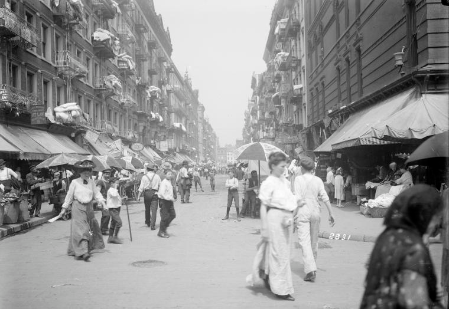
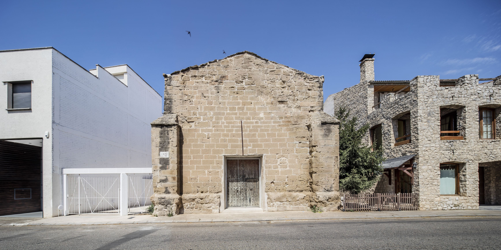
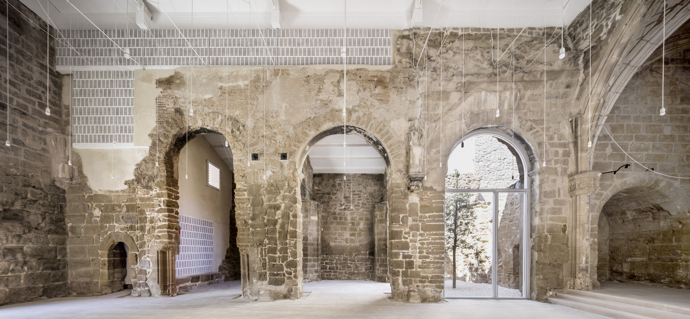
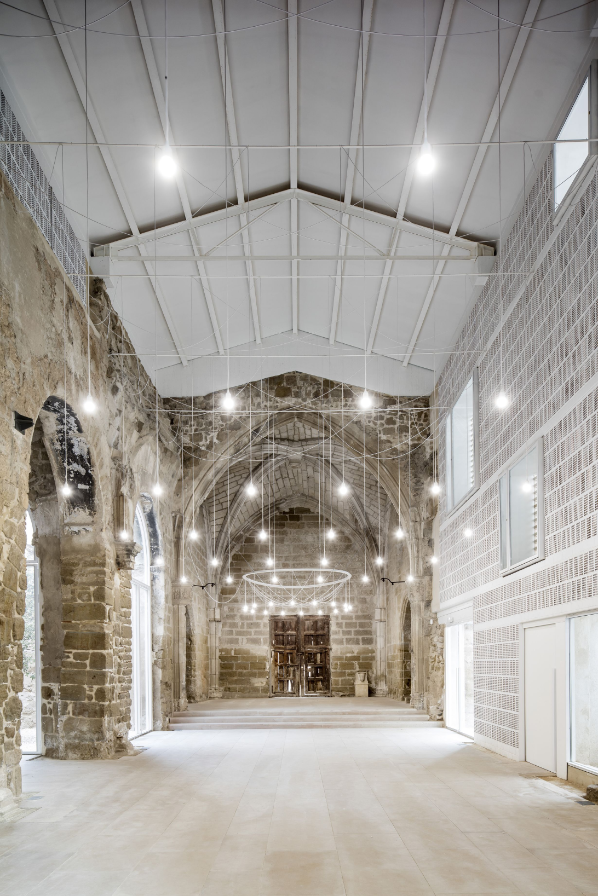
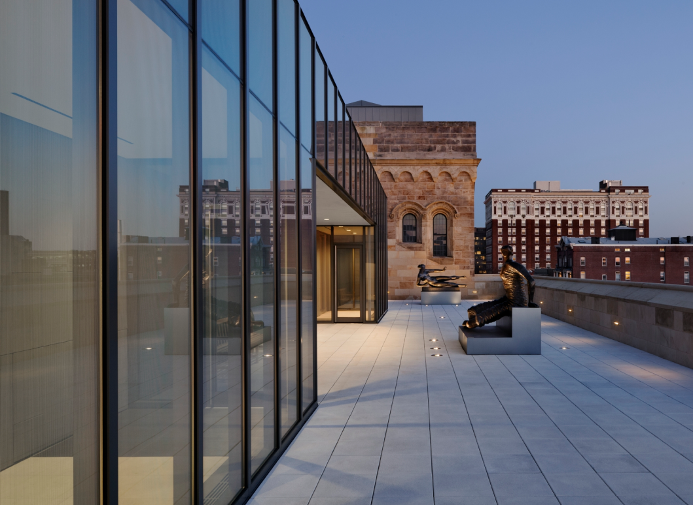
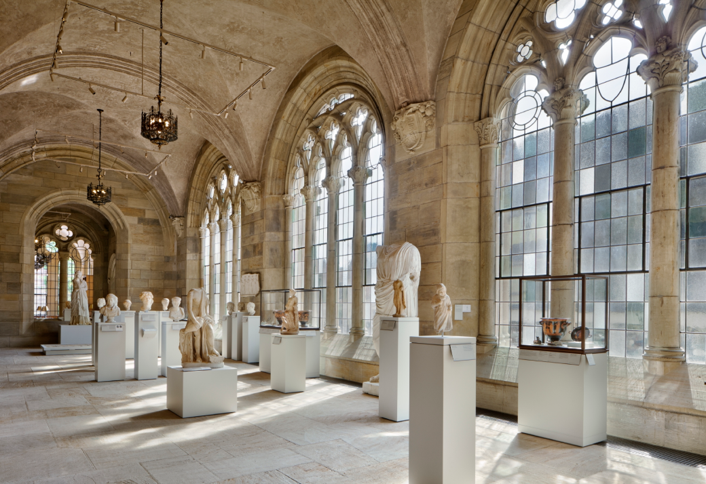
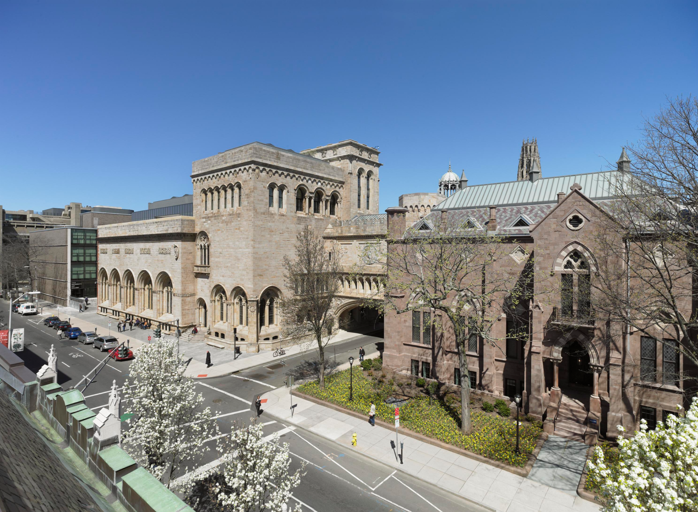
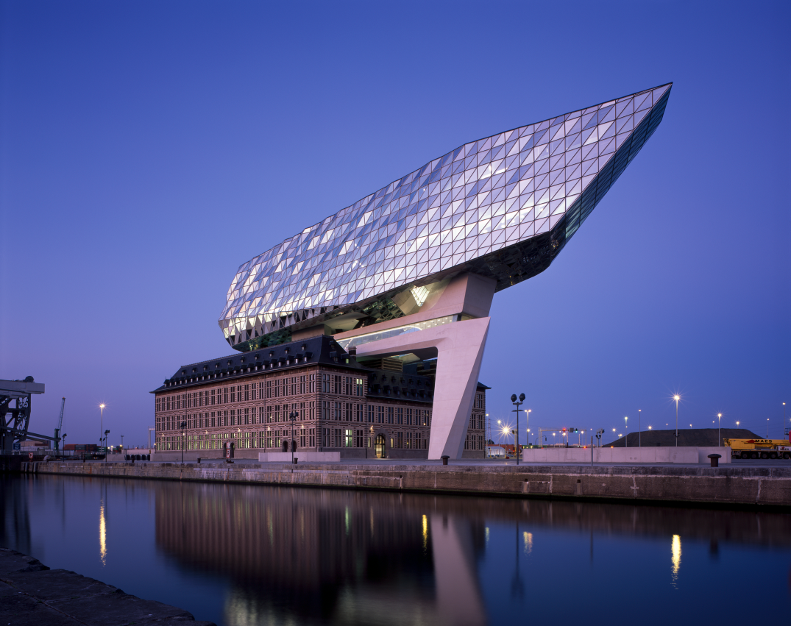
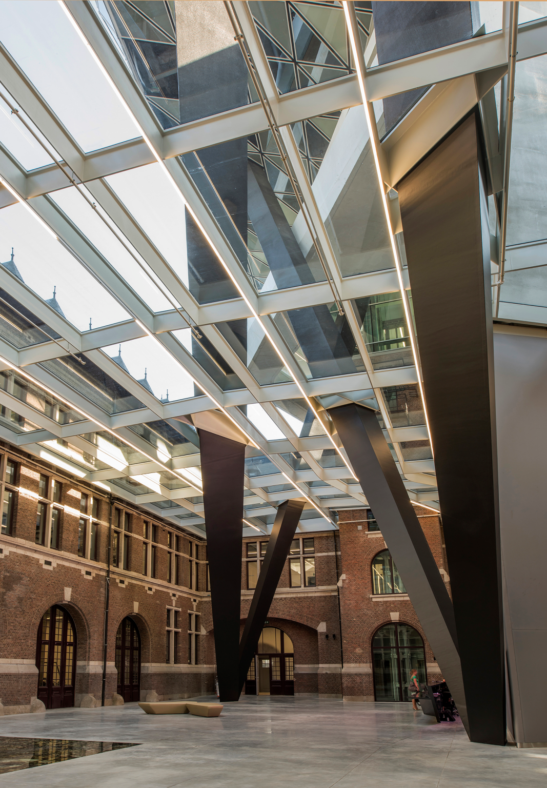
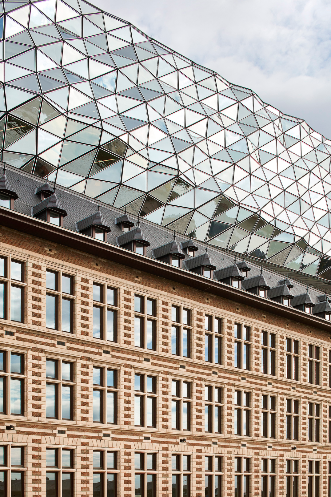

ARTICLE
When is Historic Architecture Worth Preserving?
This article was originally pushlished on the Architizer Journal in June 2019
In 2002, a bitter fight ensued over the future of 99 Orchard Street in lower Manhattan. In a continuing effort to preserve the history of tenement homes in New York City, the founder of the well-established Tenement Museum located in the adjoining 97 and 103 Orchard Street set out to acquire a third address.
Ninety Nine Orchard Street seemed the logical option, as its history mirrored that of the current Tenement Museum next door. However, there was a problem: the property was occupied by tenants and owned by Lou Holzman, whose family has been living in the building since 1910. The Los Angeles Times, New York Times and New York Post reported the conflict — all unsurprisingly aware of the irony of the Tenement Museum hoping to acquire an occupied tenement property through eminent domain.
While the conflict concerning 99 Orchard Street was particularly unusual, the discussion it generated around the future of a historically significant building was not. Whether the debate is about how to restore a historic place or whether it should be done at all, an important question influences a building’s uncertain future: How do you appropriately preserve and honor a structure’s past while repurposing it for a meaningful new chapter?
This question prompts us to consider the place that architecture, particularly historic architecture, holds in a society that is constantly reshaping the physical world to meet modern demands.
The tension that accompanies the preservation, rehabilitation, restoration or reconstruction of historic structures often stems from the subjective nature of the history represented by that physical place. This means it is vital that the future of a building serves a unique purpose that helps bind together that history with a present need. Historic preservationist Patrice Frey wrote earlier this year that “Being an effective preservationist means understanding that our efforts to save buildings are woven into a complex tapestry of other important social needs.” Today, protecting historic buildings long-term means that ambitious undertakings must be thought of in the context of a modern world.
It is apparent in conflicts like the Orchard Street tenement building that the “modern world” must still grapple with the fact that there is no clear-cut path for the restoration process. This is what makes historic preservation authorities’ jobs so challenging. “They must thoroughly probe the evidence and arguments and then render an often debatable, unprovable value judgment” wrote retired architect and professor, Roger K. Lewis in his article on historic preservation and urban development. That value judgment, however frustrating in moments of disagreement, is what makes the process that much more interesting and ultimately rewarding.
The projects featured below show a variety of approaches to repurposing and renovating historic buildings. They all demonstrate the diversity of narratives that surround historic structures. The histories preserved in these buildings merely underscore the knowledge and respect required by architects, historians, developers and government entities to preserve something of the past to give to the future.
1. The Old Church of Vilanova de la Barca by AleaOlea Architecture and Landscape, Vilanova de la Barca, Lleida, Spain
This 13th century church, built in the Romanesque architectural style, was partially destroyed during the Spanish Civil War in the 1930s. Located two hours inland from Barcelona, the small ancient town of Vilanova de la Barca was put on the architectural map after the church’s restoration and renovation in 2016. The unique combination of ancient stone ashlar and white perforated brick provides a satisfying contrast which demonstrates the thoughtful consideration of materials in the restoration and rehabilitation process.
AleaOlea chose to use the stark white bricks only where the original stone was absent, letting the materials intermingle throughout the site. A sensitive project both in symbol and physical structure, the undertaking proved a successful and exciting xample of an often-controversial architectural task.
 2. Yale University Art Gallery by Ennead Architects, New Haven, Connecticut, USA
After the Trumbull Gallery opened in 1832, followed three decades later by the neo-Gothic Street Hall building in 1866, Yale University would officially be the pioneer of university art museums and schools in the United States. Renovations and added buildings grew the Yale Art Gallery, but by the 1990s, years of change meant space had become limited, the galleries didn’t work as a unit and the art was not being displayed in an optimal way.
The 2006 restoration of the iconic Louis Kahn building preceded the comprehensive restoration and addition completed in 2012. The grand opening of the Yale University Art Gallery revealed a design which united three existing historic buildings on the campus: Street Hall (completed in 1866), Old Yale Art Gallery (1928), and the Louis Kahn Building (1953). The renovation combined the three historic buildings into “a single treasure chest”, adding much needed gallery space. The project also added a zinc and glass rooftop structure on top of the Old Yale Art Gallery that is set back in order to maintain the Florentine-style façade.
 3. Port House by Zaha Hadid Architects, Antwerp, Belgium
An old fire station located in the center of Europe’s second largest shipping port was chosen as the site of the new location for the Antwerp Port Authority. In 2009, Zaha Hadid Architects won a design competition that called for the complete restoration of the fire station, a protected replica of a previous Hanseatic structure.
The firm’s bold design added a 111-meter structure that sits off-kilter above the original fire station and resembles many similar approaches to repurposing historic structures for modern demands. The ultra-modern addition was received well by the public and, although bold, forms a physical symbol of the port it serves. The restoration of the fire house and rehabilitation of the site in the heart Antwerp prompted a reinvigoration of history that bolstered the building’s future.
 Written by Georgia Hough
Originally published by Architizer Inc.
Photo Courtesy: Architizer Database